Префектура Сидзуока · Сюдзэндзи · рёкан
Asaba в Сюдзэндзи: рёкан с пятивековой историей, сценой но над прудом и завтраком, который помнят годами
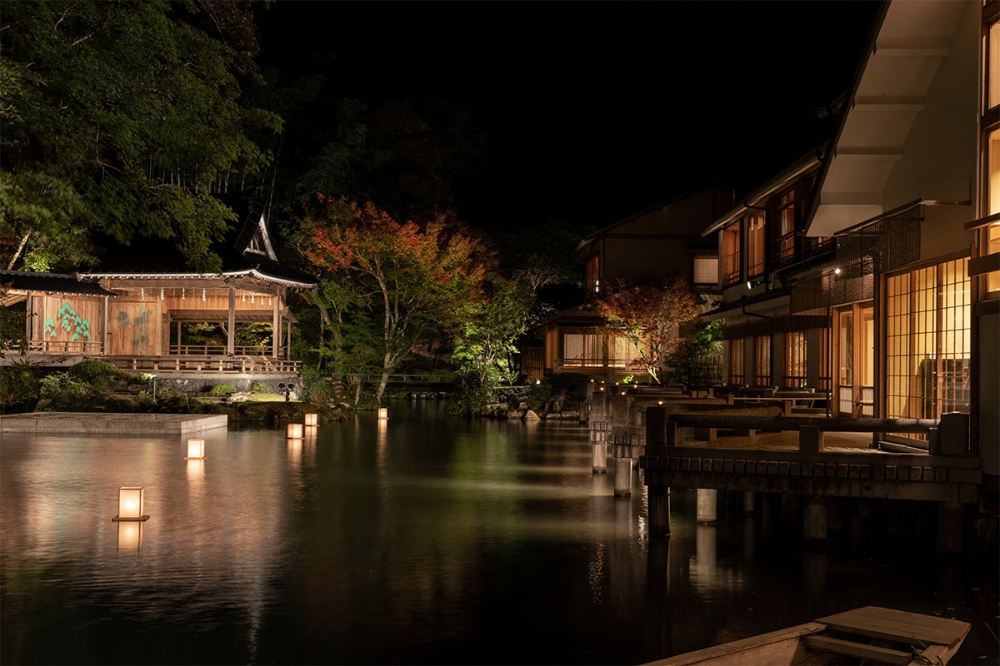
В горах полуострова Идзу, в онсэне Сюдзэндзи, больше пяти веков принимает гостей рёкан Asaba. Его называют одним из лучших в Японии, и держит его всё та же семья.
История
Пять веков одного дома
История Asaba началась больше 530 лет назад. Предок нынешних хозяев приехал сюда, когда в Сюдзэндзи открывали храм школы сото-дзэн, и стал при нём смотрителем. У ворот храма он открыл приют для паломников, из которого и вырос рёкан. С тех пор Asaba переходит в одной семье от поколения к поколению.
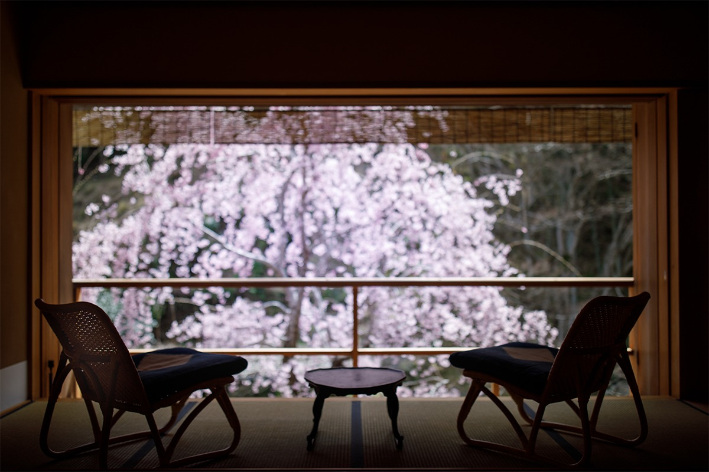
Сюдзэндзи стоит в горной долине на полуострове Идзу и давно известен своими горячими источниками. Вокруг рёкана шумит река, блестит листва, поют птицы, и здесь кажется, что время течёт так же неспешно, как и века назад.
Номера
Окна в сад и на сцену
Визитная карточка Asaba это сцена театра но посреди пруда, и лучший вид на неё открывается из номера «Угэцу». Это комната в строгом японском стиле на первом этаже, из двух помещений на 13,5 и 11 татами, с собственной ванной, куда вода идёт прямо из источника. Тем, кто едет в Asaba впервые, советуют начинать именно с неё.
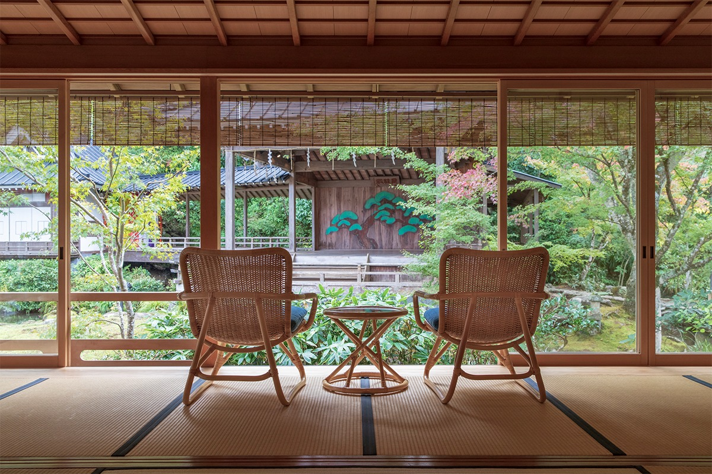
Номер «Фудзи» выходит на пруд и сад, и весной перед ним цветёт плакучая сакура. Свет и тень здесь особенно красивы. Две комнаты, на 8 и 6 татами, тоже с ванной на воде из источника.
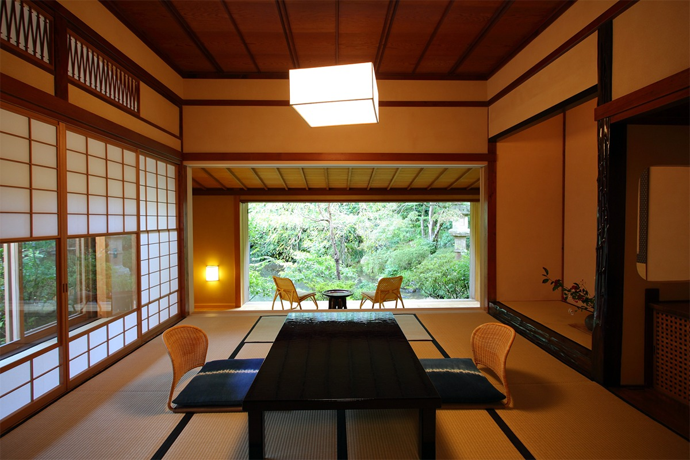
Самый просторный номер, отдельный домик «Тэнко», окружён садом со всех сторон. Его площадь 220 квадратных метров: две комнаты по 12,5 татами, ещё одна на 4 татами, широкая галерея и терраса. Кроме внутренней ванны есть купальня под открытым небом, и купаться можно, глядя на деревья.
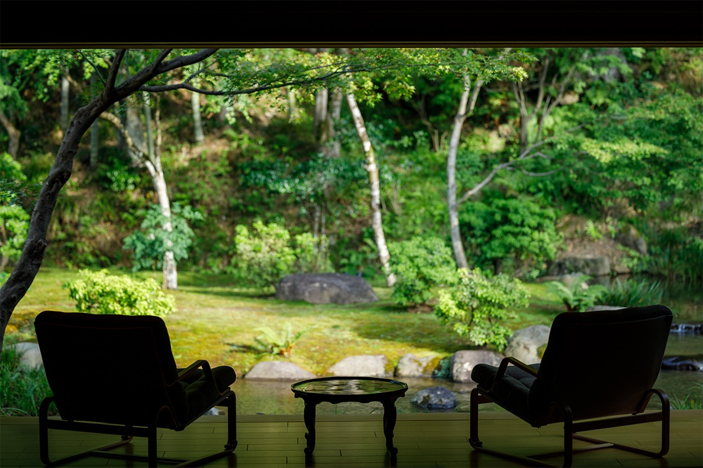
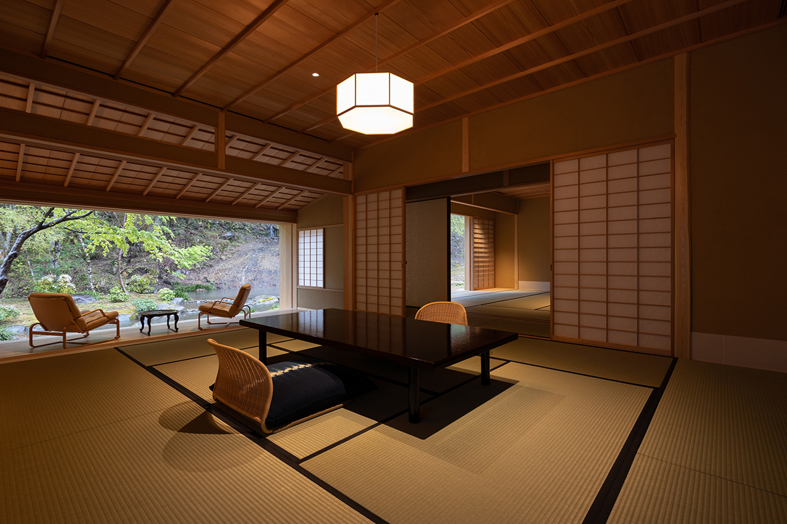
Кухня
Сезоны на тарелке
Ужин в Asaba строится вокруг того, что созрело или поймано именно в этот день. Весной подают рыбу и морепродукты из залива Суруга: он раскинулся к югу от Фудзи и считается самым глубоким в Японии. С начала лета жарят на углях аю, выросших в притоках реки Каногава. Осенью приходит время кур породы сямо и чёрной свиньи с гор Амаги, которых растят на хорошем корме в чистой природе. Зимой в ход идут местные старинные сорта овощей, свежие фрукты, рис косихикари с берегов реки Кацура и васаби.
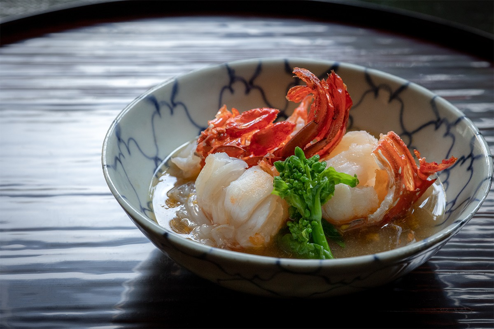
Кроме того, можно заказать особые блюда: филе вагю на углях, краба мацуба, чёрное морское ушко или лангуста во фритюре.
Завтрак
Утро, ради которого возвращаются
Многие гости приезжают в Asaba снова именно ради завтрака. Его подают в номер в 8:00, 8:30 или 9:00, и, как за ужином, рядом остаётся служащая, которая следит за столом.
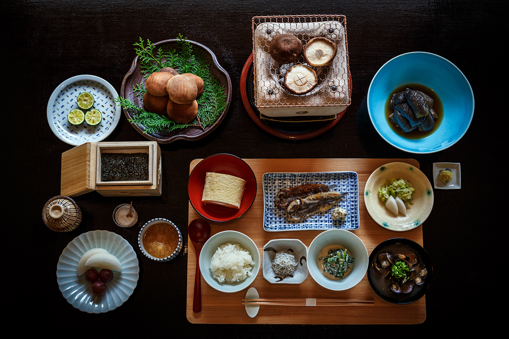
Писатель из Киото, автор книг о японских рёканах и еде, побывал во многих лучших гостиницах страны. Образцом японского гостиничного завтрака он называет именно Asaba.
«Первый завтрак в Asaba я не забуду никогда. Ни одного редкого продукта, никаких особых затей, а вкусно так, что удивляешься»
писатель, знаток японских рёканов
Омлет дасимаки подают на завтрак во многих рёканах, а кое-где повар даже готовит его на глазах у гостя. Но омлет Asaba, только что со сковороды, по словам писателя, вне конкуренции. Так же и с шиитакэ, которые жарят на углях в маленькой жаровне: обычные грибы, но почему-то необыкновенно вкусные. То же он говорит о мелкой рыбке сирасу и стружке тунца кацуобуси. Секрет он так и не разгадал, сколько бы раз здесь ни завтракал. Ужин держится на редких продуктах, а завтрак на том, как приготовить простое. Видимо, именно об этом здесь и заботятся больше всего.
Весной в меню молодой лук, томлённый в бульоне, кресс-салат с кунжутом, сирасу, дэнгаку из пшеничной клейковины с просом, омлет дасимаки, сушёная рыба на углях, рис, соленья, морские водоросли, мисо-суп и фрукты. Сушат рыбу на ветру здесь же, в рёкане.
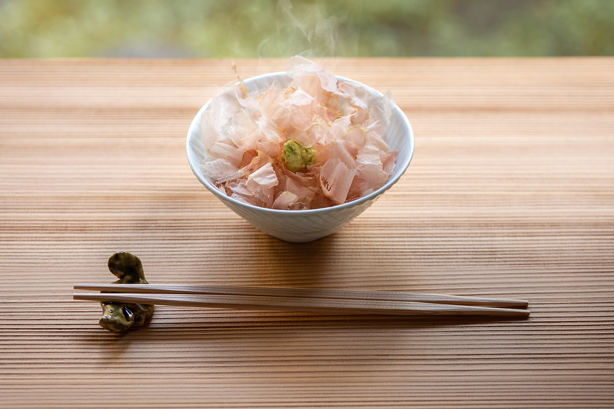
Онсэн
Купальни на воде из источника
Купальня под открытым небом смотрит на бамбуковую рощу и пруд, и в ней хорошо чувствуется, как меняются времена года. В течение дня мужская и женская половины меняются местами.
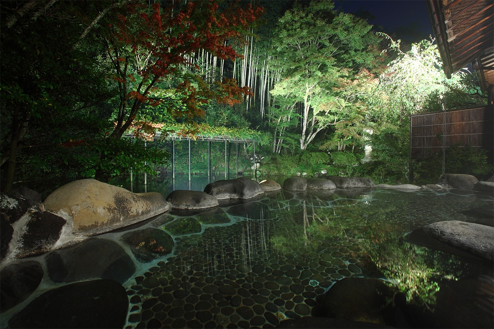
Есть и семейная купальня под крышей. Её можно занять в любое время, чтобы побыть только своими.
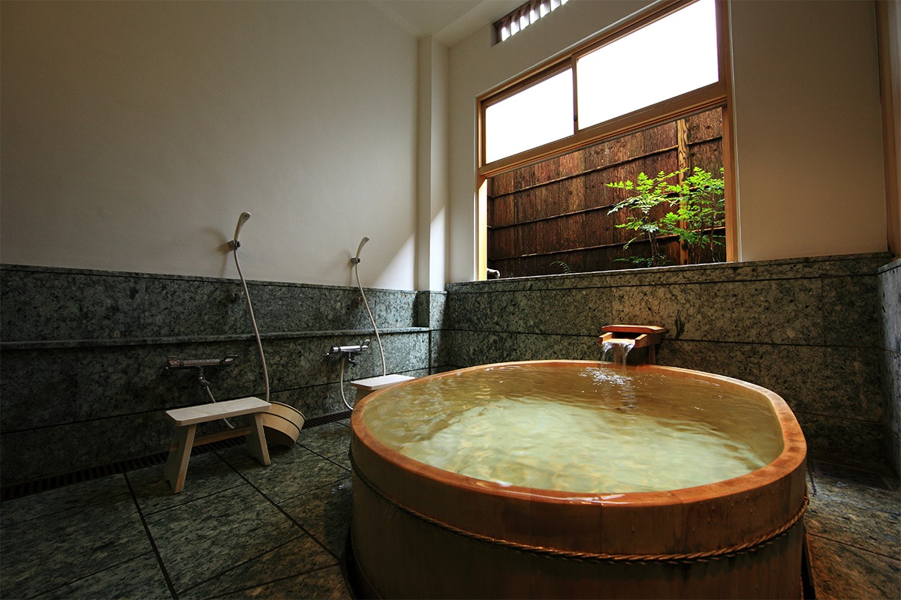
Мужская и женская купальни отделаны кипарисом хиноки, и тёплое дерево здесь чувствуется во всём. Вода в них течёт прямо из источника Сюдзэндзи и не идёт по кругу через фильтры.
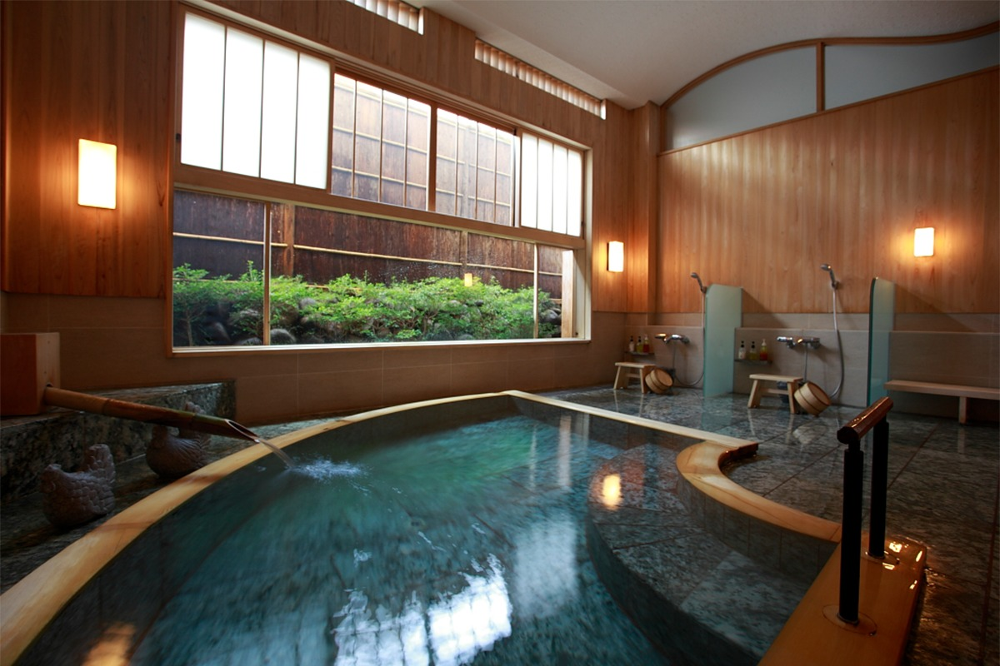
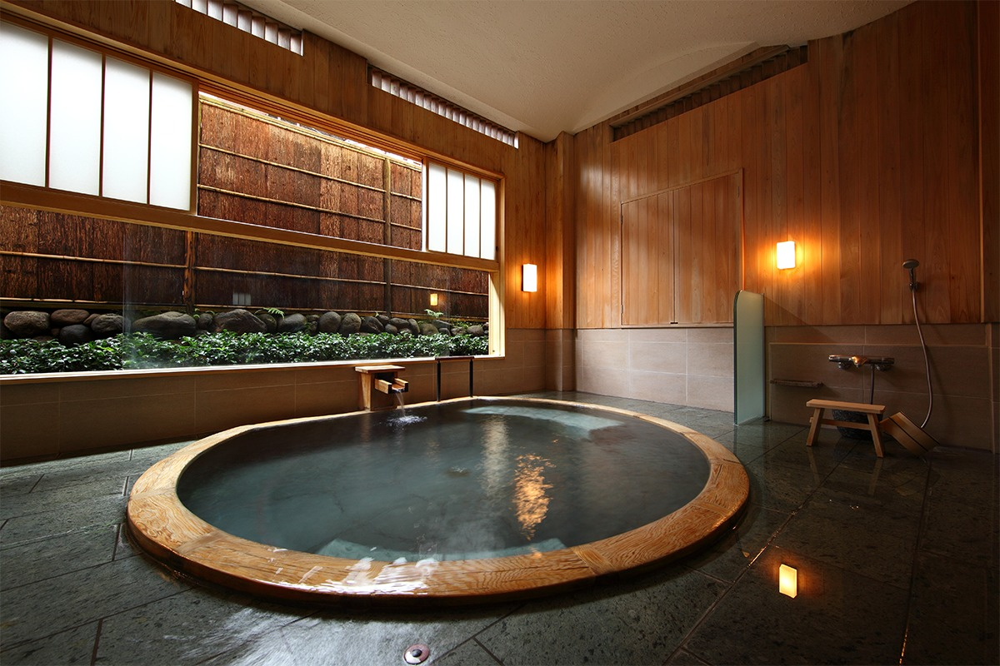
Сцена
«Гэккэйдэн» над прудом
Сцену но «Гэккэйдэн» подарил рёкану виконт Тосика Маэда (1841–1920), последний князь Дайсёдзи, небольшого княжества на побережье Японского моря. В конце эпохи Мэйдзи её перевезли сюда из Токио, а седьмой глава дома Асаба сохранил её для будущих поколений.
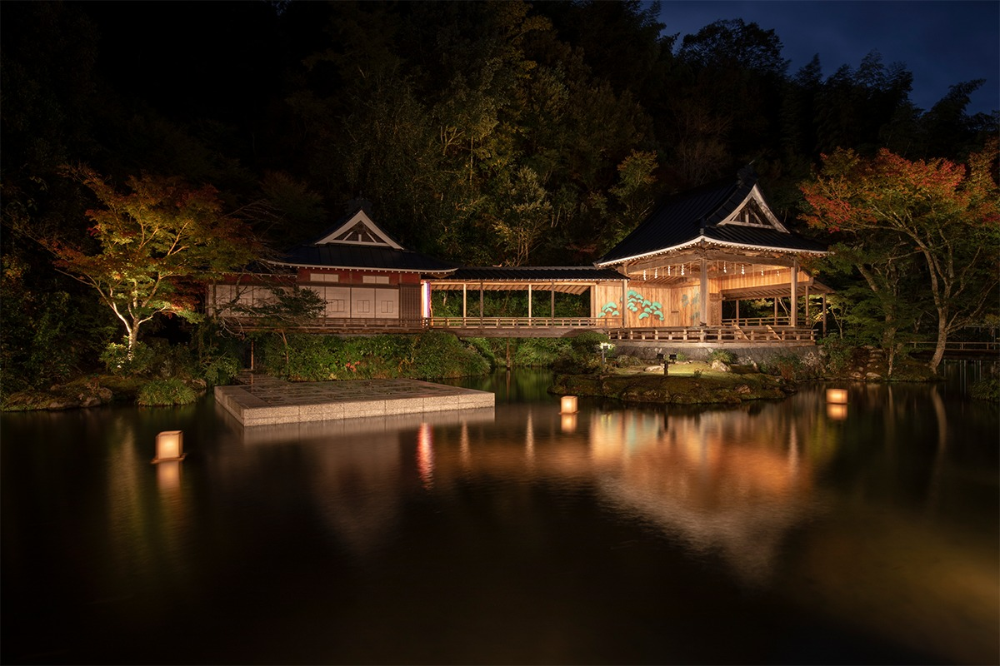
Примерно с начала 1980-х годов здесь проходит программа «Сюдзэндзи гэйдзюцу кико»: по сезонам рёкан приглашает лучших мастеров японского традиционного театра и музыки. На сцене играют но и кёгэн, поют синнай, показывают кукольный театр бунраку и исполняют музыку на лютне бива. Вечер в темноте у пруда, наполненный таинственной красотой, запоминается надолго.
Но сложился к концу периода Камакура и началу периода Муромати, то есть в XIV веке, из песен, плясок и обрядовых танцев для богов, которые были любимы ещё со времён Нара и Хэйан. Под влиянием дзэн-буддизма и живописи тушью, при покровительстве сёгунов и знати, народное искусство стало утончённым.
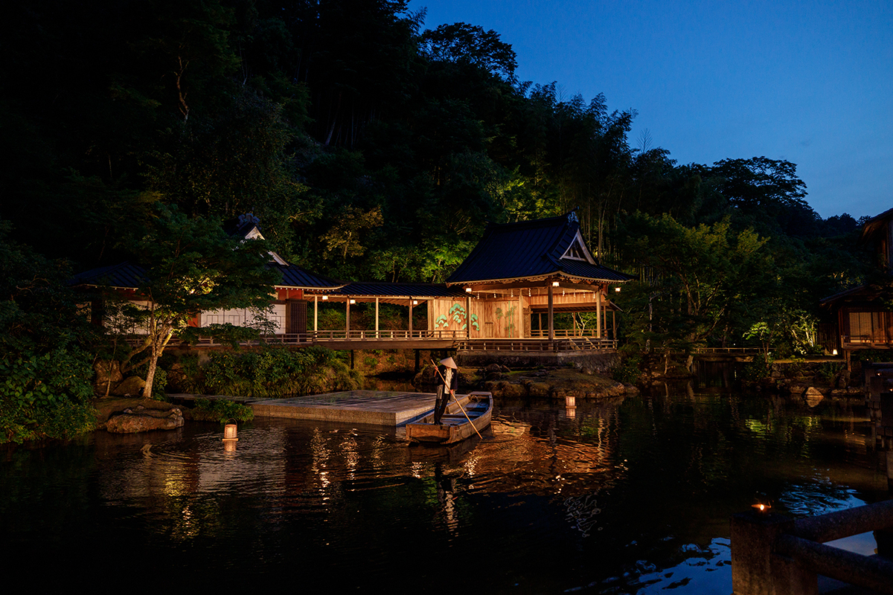
Кёгэн это пьеса, построенная на диалоге. Сложных декораций нет, всё передают слово и жест. Главное в кёгэне смех: сюжеты из жизни простых людей Средневековья и старинные истории метко подмечают человеческие привычки и слабости и превращают их в добрую шутку.
Синнай это одна из школ сказа под сямисэн, возникшая в Эдо в 1745 году. Особенно она прославилась историями о влюблённых, решивших умереть вместе, и жалобной манерой исполнения, которую называли «плачущим сказом». Исполнители ходили по городу с сямисэном и пели для тех, кто их позовёт. Таких бродячих певцов можно увидеть и в кабуки, и в исторических фильмах.
Asaba
- Адрес
- префектура Сидзуока, Идзу, Сюдзэндзи, 3450-1
- Телефон
- +81 558-72-7000
- Цены / Вход
- от 77 150 иен с человека за ночь с ужином и завтраком, с налогом и обслуживанием
- Номера
- 12
- Заезд / выезд
- 14:30 / 11:30
- Сайт
- asaba-ryokan.com
Фото: Ко Миядзи.